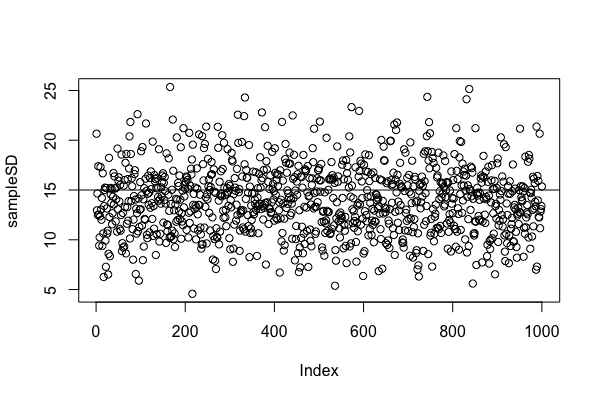
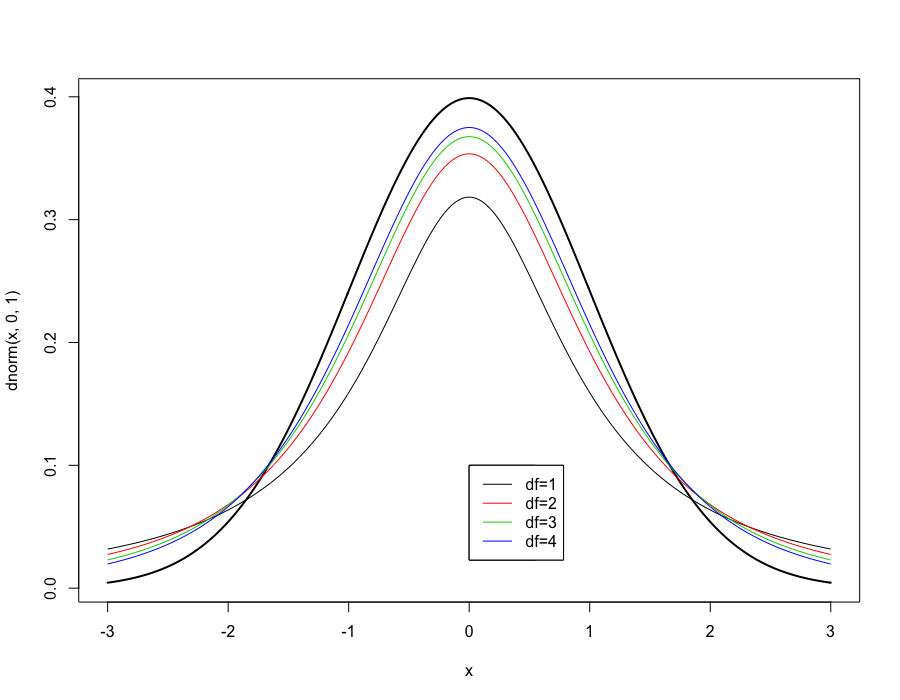

Week 9 lecture notes - PSYC 3330
This week, we will extend our work with hypothesis testing to handle two new situations:
- testing means of single samples when population SD is NOT known
- testing means of two dependent samples
What to do when population SD is unknown
Recall that in every example of hypothesis testing we did before, you were given both the population mean \(\mu\) and the population standard deviation \(\sigma\).
However, what happens if you are NOT given a value for \(\sigma\)?
Example: A population has a mean of \(\mu=23\). A sample of four is given an experimental treatment and has scores of 20, 22, 22, and 20. Test the hypothesis that the treatment results in a lower score.
Let's proceed with the usual hypothesis testing steps. Importantly, we can calculate our sample \(z\) score as:
\[ z=\frac{\overline{x}-\mu}{\sigma/\sqrt{n}} \]
Note that we know everything except \(\sigma\). What do we do now?
Proposal: let's just use the standard deviation of the sample!
This is an attractive idea, as it would make sense that the sample's standard deviation should be a reasonable estimator of the population standard deviation. However, this is not quite a true statement!
Demonstration: sample SD is a biased estimator
In class, I'll show you a simulation using the software package R. Suppose we start with a population that has \(\mu=100\) and \(\sigma=15\). Imagine if we could repeatedly pull samples of size \(n=10\) from this population.
We know from our work with the distribution of sample means that the mean of these sample means is exactly equal to the population mean \(\mu\). That is, the mean of these means should be 100.
However, what about the standard deviations? What can we expect them to be?
If we pull a few samples, we can see a pattern emerging:
- sample 1 – sd=9.9
- sample 2 – sd=17.9
- sample 3 – sd=12.7
- sample 4 – sd=9.9
- sample 5 – sd=14.2
You'll notice that 4 out of these 5 samples had a standard deviation BELOW \(\sigma=15\). That is, the sample's standard deviation seems to be an underestimate of the population standard deviation \(\sigma\).
We can verify that this happens in the long run too.
The following figure is a plot of the sample standard deviations that were calculated for 1000 different samples:

It may be hard to see, but it turns out that 63% of the samples had standard deviation less than 15.
Thus, in the long run, the sample standard deviation is a biased estimator that tends to underestimate the population standard deviation!
How to fix it?
So, the next question should be: How do we fix it? It turns out that there is a simple solution..instead of dividing SS by \(n\), we alternatively can divide by \(n-1\). That is, we define:
\[ s=\sqrt{\frac{\sum (x-\overline{x})^2}{n-1}} \]
Thus, \(s\) is called the sample standard deviation.
Note: this should make sense. If we divide SS by a slightly smaller number (\(n-1\) instead of \(n\)), the resulting quotient will be slightly larger. This turns out to be enough to fix the underestimation problem demonstrated earlier.
Hypothesis testing with \(s\) instead of \(\sigma\).
So, we are almost ready to proceed in our hypothesis testing example from earlier. However, there is one slight problem.
Recall that when using the \(z\) statistic in our hypothesis testing problems from last week, our critical values were contingent upon the fact that the distribution of sample means is normal. However, it turns out that when using \(s\) instead of \(\sigma\), the distribution of sample means is NO LONGER NORMAL!
This fact was discovered by William Gosset in the early 1900s. He worked for Guiness Brewery, and could not publish his result under his name, so used the pseudonym "Student". The distribution of sample means that he developed has since been forever called the Student \(t\) distribution.
It turns out that the \(t\) distribution is approximately normal, but its shape depends on sample size. The pattern is as follows (as can be seen in the following graph): the smaller the sample, the "thicker" the tails. Another way to say this is: the larger the sample, the "thinner" the tail.

For historical reasons, the different curves are described by something called "degrees of freedom" (denoted \(df\)), where \(df=n-1\).
Since the \(t\) is not normal and there is a different curve for each sample size, we need a new table to use when finding critical values. This table is availabe in the back of your textbook (as well as on Blackboard).
Back to our example
Now, lets use this new information to solve our original hypothesis testing problem from earlier in the lecture:
Step 1: we'll use a one-tailed test with \(\alpha=0.05\). Recall that our sample size is \(n=4\), which means \(df=4-1=3\). According to the \(t\)-table, our critical value is \(t_{\text{crit}}=-2.353\).
Step 2: compute \(t\)-statistic: first, though, we must compute our estimate \(s\) for the standard deviation.
| \(x\) | \(x-\overline{x}\) | \((x-\overline{x})^2\) |
|---|---|---|
| 20 | -1 | 1 |
| 22 | 1 | 1 |
| 22 | 1 | 1 |
| 20 | -1 | 1 |
Thus,
\[ s=\sqrt{\frac{SS}{df}} = \sqrt{4/3} = 1.15 \]
Now, we can compute:
\[ t=\frac{\overline{x}-\mu}{s/\sqrt{n}} = \frac{21-23}{1.15/\sqrt{4}} = -3.48 \]
Thus, since \(t\) is beyond \(t_{\text{crit}}\), we reject the null and conclude that the treatment resulted in a smaller score.